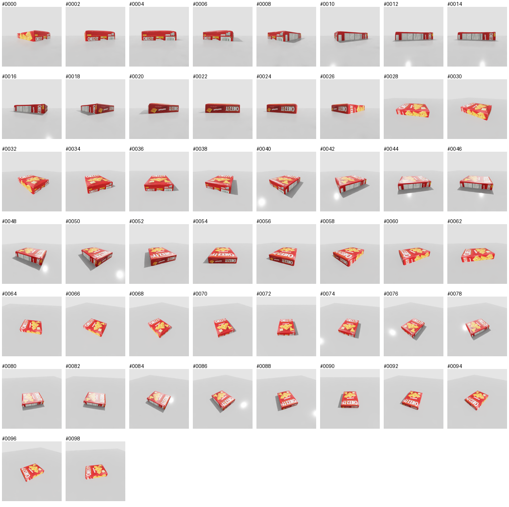

Problem 01 · COLMAP 病根：SIFT 在重复图案上的系统性误匹配
—— 本篇即 COLMAP 完整笔记：§1-8 病根分析，§9 调参实录（从 2/99 救到 99/99）
0 · 主角：COLMAP 是什么
COLMAP 是一个通用的、端到端的 SfM（运动恢复结构）+ MVS（多视图立体） 三维重建管线，提供图形界面和命令行两种接口，支持有序与无序图像集合。 由 Johannes L. Schönberger 与 Jan-Michael Frahm 在 ETH Zurich 期间开发， 现以 BSD 协议开源并由社区维护——它是三维视觉领域事实上的标准工具。
它解决什么问题
给你一堆照片（手机随手拍的、无人机航拍的、机器人绕拍的），回答两个问题：
问题 1：每张照片是从哪拍的？
→ 输出每张图的相机位姿（旋转 R + 平移 t）
问题 2：场景里有什么？
→ 输出三维结构（稀疏点云，MVS 阶段还能出稠密点云/网格）
输入与输出
| 内容 | |
|---|---|
| 输入 | 一组图像（可选：已标定的相机内参，如我们提供的 342.07） |
| 输出 | cameras.bin —— 相机内参（焦距、主点、畸变） |
images.bin —— 每张图的位姿 + 该图上被三角化的 2D 特征点 | |
points3D.bin —— 稀疏三维点云（以及每个点被哪些图看到 → track 信息） |
它为什么是 3DGS 管线里绕不开的一环
3DGS 训练必须先有两样东西，而 COLMAP 恰好一次给全：
convert.py 第一步就是跑 COLMAP——本项目的 COLMAP 流程正是照抄它的命令序列。1 · 先看结果：问题长什么样

后果 A：位姿整体歪 18 cm
| 平均误差 | 18.21 cm |
| 中位数 p50 | 15.92 cm |
| 最好的 3 帧 | 3.87 / 4.68 / 8.27 cm |
| 误差 < 5cm 的帧 | 2 / 99（2%） |
相机轨道半径才 25 cm——误差接近其 73%。
后果 B：物体"裂开"、背景泡沫爆炸
- 同一表面在不同照片里投影到相差十几厘米的位置
- 高斯只能分裂成多个副本去同时满足矛盾证据 → 裂开 / 重影
- densification 失控：高斯数 3,613 → 480,673（133 倍）

rgb_0027 / 0028 / 0029 / 0052 / 0053 / 0054 / 0055——帧号连续。
说明畸变是空间连续的（整个方位角区间一起偏），而不是个别离群图片。
这直接排除了"少数坏图污染"的假设。
2 · 关键词速查（本项目涉及的全部概念）
| 关键词 | 是什么 | 在本项目里的位置 |
|---|---|---|
| 相机标定 Calibration |
确定相机内参：焦距 fx, fy、主点 cx, cy、畸变。
没有它就无法把像素位置换算成三维射线。 |
从 Isaac Sim 相机 prim 读出 fx = 342.07，喂给 COLMAP；
并锁死 --Mapper.ba_refine_focal_length 0 |
| SIFT | 局部特征：检测"角点/斑点"并生成 128 维描述子，用描述子距离判断两图的点是否同一个。 | 本问题的主角。默认参数下每图仅 ~434 个特征点 |
| 对极几何 Epipolar Geometry |
两台相机看同一个 3D 点时，对应点必须落在对方图像的极线上。 数学形式：本质矩阵 E / 基础矩阵 F。 | COLMAP 用它做几何验证：我们的库里 two_view_geometries = 4851（99 图两两配对全部验证过） |
| RANSAC | 鲁棒估计：随机抽样、反复投票，把不符合模型的点当外点剔除。 | 正是它救不了我们——见 §5 |
| SfM Structure from Motion |
从多张不同位置的照片，同时恢复相机位姿与稀疏三维结构。 | COLMAP 全流程；结果是 99/99 注册、4923 个稀疏点、18.21cm 误差 |
| 三角化 Triangulation |
已知两个相机位姿 + 同一点在两图的像素位置 → 两条射线求交 → 该点的 3D 坐标。 | 4923 个稀疏点全部由此得来，所以它们必然落在"多图可见"处 |
| PnP | 已知一批 3D 点及其在某张图的 2D 投影，反解这张图的相机位姿。 | 增量式 SfM 每注册一张新图就解一次 PnP（EPnP + RANSAC） |
| Bundle Adjustment | 联合优化所有位姿 + 所有 3D 点 + 内参，最小化重投影误差。 | 它把误匹配"消化"成整体畸变——只保证投影对得上，不保证几何对 |
| MVS Multi-View Stereo |
位姿已知后，为每个像素估深度 → 稠密点云。 | 本项目用仿真渲染的真值深度替代（15 万点 vs 4923 点，差 30 倍） |
3 · SIFT 到底是什么
SIFT 靠什么区分两个点：局部外观的唯一性
它只看关键点周围那一小块（16×16 像素），完全不知道这个点在整个物体上的位置。 所以它的判别力完全依赖一件事：不同位置的局部长相必须不一样。
4 · 为什么它在这里失效（核心）
雪上加霜：90% 白板
纯白桌面与背景没有任何梯度 → 提不出特征。实测近白像素 85%~94%（平均 89.5%）。 所有几何约束只能靠盒子表面那 6.4% 的画面，而这块区域偏偏还是自相似的。
为什么不是"特征少"那么简单
特征少只会让重建稀疏；而我们是整体歪。 区别在于：少量随机误匹配会被 RANSAC 剔除， 但重复图案产生的是成片、方向一致的误匹配。
5 · 对极几何与 RANSAC 为什么救不了
重复图案造成的误匹配（A↔E）在几何上是完全自洽的——它们确实存在于某个合法的相对位姿下。 所以极线约束检不出它们，RANSAC 把它们当内点保留下来。 能剔掉的只有随机噪声，剔不掉结构性的欺骗。
6 · 完整根因链
7 · 已经排除的假设（排除法）
| 假设 | 验证方式 | 结论 |
|---|---|---|
| 照片损坏 / 异常帧 | 抽样 50 张逐张检查：尺寸一致、亮度 std 0.79、无模糊 | ❌ 排除 |
| 曝光漂移造成帧间矛盾 | 已做线性空间曝光归一化（ring 漂移 8.49 → 2.66） | ❌ 排除 |
| 内参错误 | 锁死标定值 ba_refine_focal_length 0 重跑 | ⚠ 仅 18.21→16.52cm，非主因 |
| 少数坏图污染 | 误差中位数 15.92、<5cm 仅 2/99、坏帧连续 | ❌ 排除（是全体系统性） |
| 注册率不足 | 提高 peak_threshold 后 99/99 注册 | ⚠ 覆盖修好了，精度没救回来 |
| SIFT 在自相似图案上的结构性误匹配 | 以上全部排除后剩下的唯一解释 | ✅ 确认 |
8 · 为什么"系统性"这个词决定处理方式
如果是随机污染
少数离群点 → 剔除坏图或加鲁棒损失即可，存在"正确的多数派"可供投票。
实际是系统性畸变
全体偏离 + 空间连续 → 不存在正确的多数派。剔除坏图只会在覆盖上挖洞， 剩下的仍平均偏十几厘米。
下一步方向（对症的是"换掉 SIFT 这条路"）
| 路线 | 为什么对症 |
|---|---|
| 前馈式重建 （DUSt3R / VGGT） |
用 Transformer 直接回归 3D，不依赖局部描述子的唯一性， 能利用全局上下文区分"这是盒子左上角还是右下角"。同时输出稠密 pointmap， 顺带解决初始化点云稀疏的问题。Pixel-aligned 特征预测。 |
| Epipolar-guided Transformer | 不是"用极线剔除外点"，而是用极线约束引导注意力—— 只在极线上采样特征进行 cross-attention，从机制上就不给重复图案留歧义空间。 |
| 贴标记点（AprilTag） | 给场景注入唯一且可分辨的特征，产线标准做法，但不改算法本身。 |
| 接受，作为 baseline 结论 | 记录"真实场景经典 SfM 在此类场景的能力上限"，这正是本项目 A/B 对照的价值。 |
9 · 附录：COLMAP 调参实录（从 2/99 到 99/99）
上面的病根治不了（SIFT 的结构性缺陷），但下面四个官方参数开关能把"完全不可用"救成"能用"。 全部是 COLMAP 原生参数，真实产线同样适用。
9.0 实测演进
| 版本 | 改动 | 注册率 | 点云 | 位姿误差 |
|---|---|---|---|---|
| v1 | 官方默认（自标定内参） | 2 / 99 | — | — |
| v2 | 提供标定内参 PINHOLE | 50 / 99 | 2,191 | 19.91 cm |
| v3 | 提高特征密度 | 99 / 99（但选了废的子模型） | 646 | — |
| v4 | 选最大子模型 | 99 / 99 | 4,923 | 18.21 cm |
9.1 开关一：固定内参（标定过的相机就该锁死）
问题：我们提供了标定值 342.07，但 mapper 的 BA 默认继续优化焦距，最终报出
374.74（+9%）。焦距与位姿在 BA 里耦合——焦距错一点，整个场景的尺度与形状就系统性扭曲。
colmap mapper \ --database_path ... --image_path ... --output_path ... \ --Mapper.ba_refine_focal_length 0 \ --Mapper.ba_refine_principal_point 0 \ --Mapper.ba_refine_extra_params 0 \ --Mapper.ba_global_function_tolerance=0.000001
这不违反 baseline 原则：真实机器人工位本来就有标定好的相机内参，SfM 时固定内参是标准做法。
| Baseline（BA 改焦距→374.74） | 固定内参 | |
|---|---|---|
| 平均误差 | 18.21 cm | 16.52 cm |
| 中位数 | 15.92 cm | 12.15 cm（−24%） |
| 最大 | 33.37 cm | 37.06 cm |
| 子模型数 | 2 个（sparse/0 是废的 9 张） | 1 个（干净） |
结论：有效，但不治本。绝对误差仍在 16 cm 量级 → 内参被改只是次因， 主因仍是 §4 讲的 SIFT 结构性误匹配。固定内参是"该做的事"，救不了匹配质量。
9.2 开关二：多子模型选择 ★ 大坑
convert.py
硬编码 --input_path distorted/sparse/0——正好挑中废的那个：
distorted/sparse/0 → 9 images, 646 points ← 断裂分支 distorted/sparse/1 → 99 images, 4,923 points ← 真正的主模型流程一路"成功"没报错，结果只用了 9 张图。
解决：自动选点数最多的子模型（bat 里的 PowerShell 一行）：
for /f %%i in ('powershell -NoProfile -Command "$b='%SRC%\distorted\sparse'; (Get-ChildItem $b -Directory | Where-Object { Test-Path (Join-Path $_.FullName 'points3D.bin') } | Sort-Object { (Get-Item (Join-Path $_.FullName 'points3D.bin')).Length } -Descending | Select-Object -First 1).Name"') do set SUB=%%i
"%COLL%" image_undistorter --input_path "%SRC%\distorted\sparse\%SUB%" ...
教训：不要盲信"官方脚本跑通没报错"。每一步都要检查 points3D.bin 的实际规模。
9.3 开关三：特征密度（少纹理场景必须调）
问题：默认参数每图仅 ~434 个 SIFT 特征点（纯白桌面零特征）， 顶环（俯视，画面 80% 是白桌面）27 张全部注册失败。
--SiftExtraction.peak_threshold 0.002 # 默认 0.00667 --SiftExtraction.first_octave -1 # 在 2x 分辨率提取 --SiftExtraction.max_num_features 16384 # 默认 8192
代价：提覆盖率是有副作用的
白桌面上也会提取到噪声特征 → 初始点云混进背景点。实测：22% 是远处杂点、37% 是灰色桌面点。 这些种子被 densification 大量增殖，就是 §1 里那些弥散的灰白色高斯球。必须配套清理。
9.4 开关四：清理初始点云里的背景
| 区域（对齐到真实坐标后） | 点数 | 占比 |
|---|---|---|
| 物体包围盒内 | 3,519 | 71% |
| 近桌面区域 | 3,830 | 78% |
| 远处 / 垃圾点 | 1,093 | 22% |
| 灰色点（桌面/白色） | 1,814 | 37% |
清理三招（都不需要真值，真实场景可用）：
- 按 track 长度过滤（最靠谱）：
points3D.bin存了每个点被哪些图像看到。 track < 3 的点大多是误匹配产物 → 丢掉 1,151 个 - 统计离群点剔除（open3d
remove_statistical_outlier）→ 再丢 159 个 - 写回文件让 nerfstudio 读到清理后的结果（脚本直接重写
points3D.bin， 原文件备份为.orig）
4923 → 3,613 (scripts/28_filter_colmap_init.py)
再加一道：mask（详见 Lesson 05）
splatfacto 确实支持 mask（splatfacto.py:707-715）：GT 与渲染图在 mask 外同时置黑
→ 背景 loss = 0 → 不增殖。mask 用色度阈值生成
（max(RGB)-min(RGB) > 40），不能用"非白"阈值——桌面亮度 207~214 会被误判成物体。
9.5 可复用经验
- COLMAP 跑通 ≠ 结果对。每一步都要检查产出规模（特征点数、注册数、点云数）。
- 标定过的相机固定内参，别让 BA 改它。
- 永远检查 mapper 是否输出了多个子模型，选最大的那个。
- 提特征密度有副作用：用背景噪声换覆盖率，必须配套点云清理。
- 位姿误差要相对场景尺寸看：18 cm 在大场景微不足道，在 25 cm 轨道上等于 73% ——小物体场景对 COLMAP 极其不友好。
9.6 相关文件
| 文件 | 作用 |
|---|---|
run_colmap_gs_official.bat | 完整 COLMAP 流程（含多子模型选择、固定内参） |
run_train_colmap.bat / run_train_colmap_masked.bat | 用 COLMAP 位姿训练 splatfacto（后者带 mask） |
13_colmap_vs_gt.py | 位姿误差量化（Umeyama 对齐），支持传入模型目录做对比 |
28_filter_colmap_init.py | 清理初始点云里的背景点 |
29_make_colmap_masks.py | 纯 RGB 色度阈值生成 mask + 填洞 |